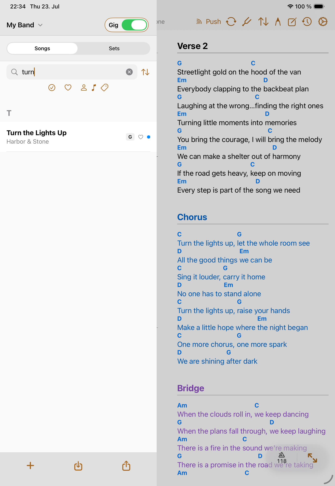
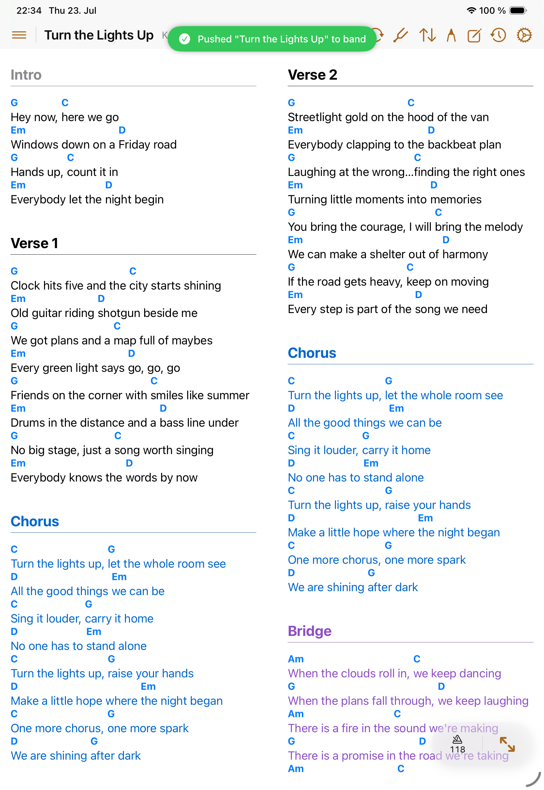

Band stage
Gig Mode
Gig Mode lets eligible band members push the active song to listening bandmates.
Gig mode belongs to a band workflow.
Use song push
- Select the shared band library.
- Open the song that should be active for the group.
- Enable gig mode on devices that should listen.
- Push the current song from the leading device.
- Confirm listening devices switch to the matching local shared song.


What happens if a song is missing
If a listening device does not have the pushed song locally, Songivo reports the missing song instead of switching blindly. Sync the band library and try again.
Best use
- Use it during rehearsal or live mode when one person calls the next song.
- Keep the band library synced before the event.
- Confirm every device is using the same band context.